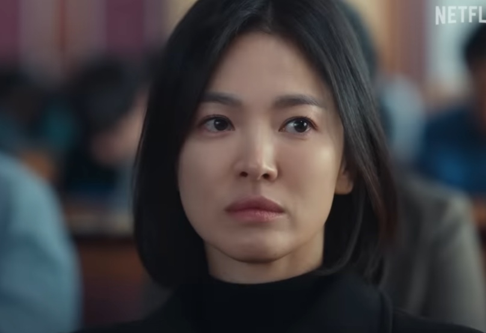
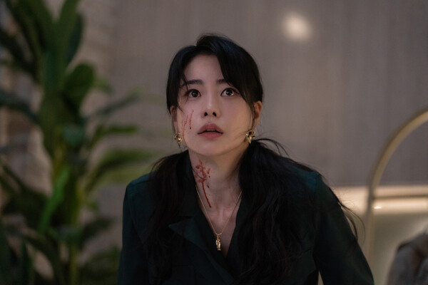
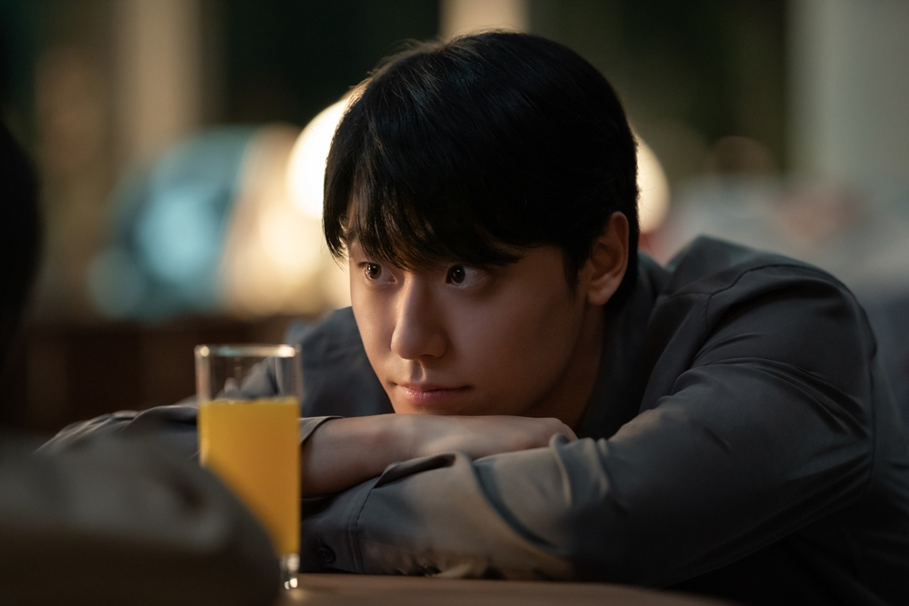

이 테스트는?
넷플릭스 드라마 『더 글로리』 속 인물들의 성격 유형을 바탕으로
당신과 가장 닮은 캐릭터를 찾아드립니다.
총 20문항을 통해 당신의 성향을 분석하고
결과에 따라 문동은, 박연진, 주여정 등 다양한 인물이 등장합니다.
대표 인물 미리보기

문동은
차분하고 냉철한 계획형. 고통 속에서도 복수를 설계하는 인물.

박연진
외향적이고 주도적인 리더형. 때론 잔인하고 이기적인 성향.

주여정
다정하고 헌신적인 이상주의자. 사랑 앞에선 누구보다 진심.
制作者의 한마디
이 테스트는 드라마 팬과의 소통을 위해 제작된 비영리 콘텐츠입니다.
재미로 즐겨주시고, 결과를 자유롭게 공유해주세요!